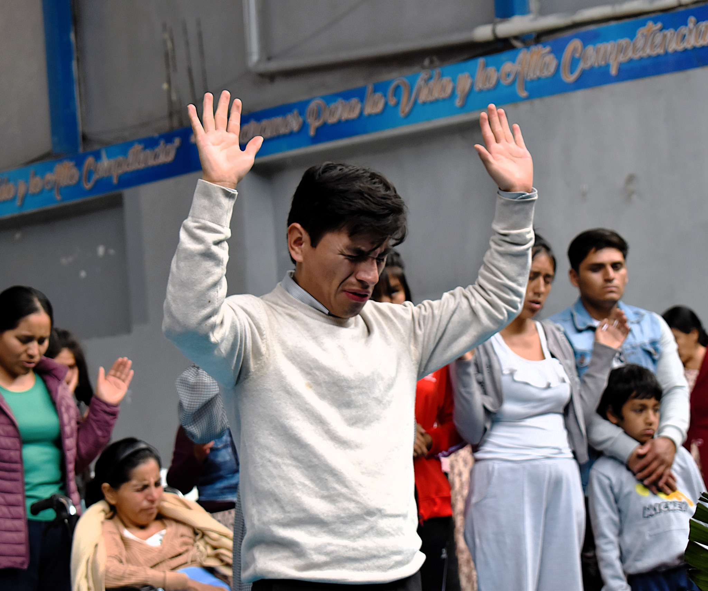
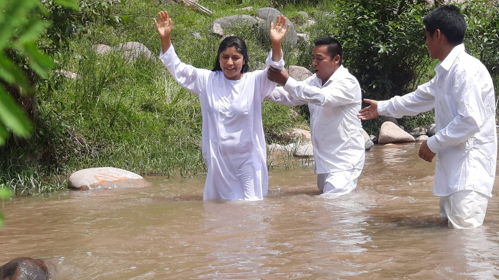
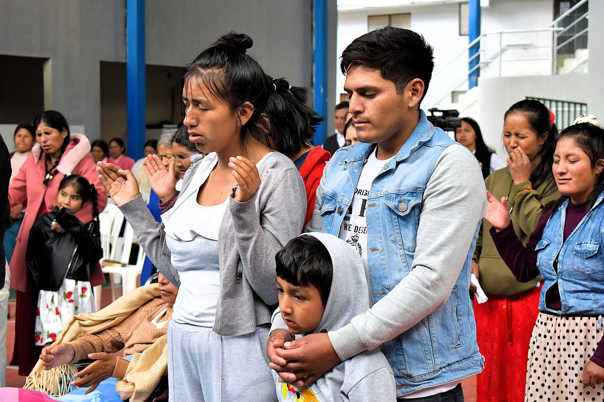
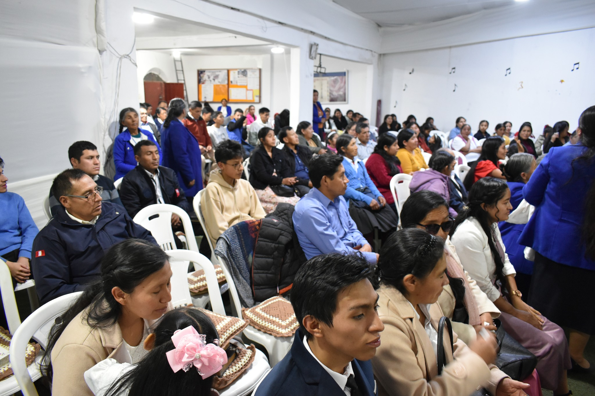
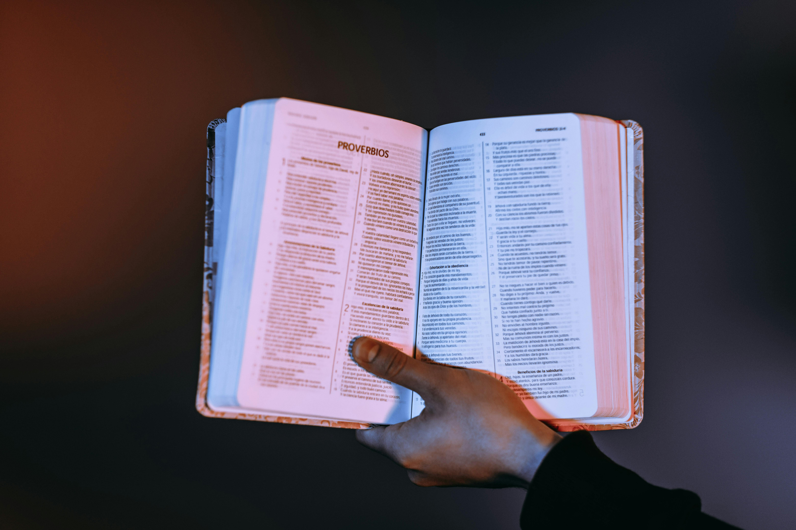

Buenas Nuevas
Buenas Nuevas
Paz
Entre hojas que caen, Dios nos recuerda que en Él descansa nuestra alma.
“Tú guardarás en perfecta paz a aquel cuyo pensamiento en ti persevera, porque en ti ha confiado.” — Isaías 26:3
Reflexión del día
Reflexión de hoy
Sobre nosotros
Somos una iglesia que cree en la transformación del corazón mediante el encuentro con Jesús. Aspiramos a ser un refugio de fe, compasión y verdad, donde cada vida encuentre propósito y cada familia descubra la esperanza que solo Dios puede dar. Nuestro compromiso es vivir la Palabra y extenderla con humildad y amor.
“Lámpara es a mis pies tu palabra, y lumbrera a mi camino.”
Salmos 119:105




Misión y visión
Misión
Anunciar el evangelio de Jesucristo, formando discípulos y sirviendo con amor a nuestra comunidad.
Visión
Ser una iglesia que refleja el amor de Cristo, transformando vidas y alcanzando generaciones para Dios.
Nuestras doctrinas
Las Asambleas de Dios del Perú enseñan que la Biblia es la autoridad suprema de la fe cristiana, creen en un solo Dios en tres personas (Padre, Hijo y Espíritu Santo) y en la salvación por gracia mediante la fe en Jesucristo. Además, enfatizan la obra del Espíritu Santo, la vida santa, la evangelización y la esperanza del regreso de Cristo.
Ver nuestras doctrinas
Pastores principales
Nuestros pastores, Pr. Guzmán Anaya y su amada esposa Pra. Martha Gutiérrez, han sido llamados por Dios para servir con amor, entrega y fidelidad. A lo largo del tiempo han caminado firmes en su vocación, guiando a la congregación con sabiduría, oración y un corazón dispuesto, aun en medio de pruebas y dificultades. Su labor constante ha sido un reflejo del compromiso genuino con la obra del Señor y con cada familia que forma parte de esta iglesia. Con paciencia y fe, han sembrado esperanza, restauración y unidad, confiando siempre en que Dios es quien fortalece y sostiene cada paso del camino.
“Por tanto, mis amados hermanos, estad firmes y constantes,
creciendo en la obra del Señor siempre, sabiendo que vuestro
trabajo en el Señor no es en vano.”
1 Corintios 15:58
Nuestros recuerdos
Estas imágenes testimonian la vida de nuestra iglesia como un solo cuerpo en Cristo. A través de los encuentros con nuestros niños, los bautismos, los tiempos de adoración y la enseñanza de la Palabra, se manifiestan la comunión, la armonía y el amor fraternal que Dios nos llama a vivir. Cada momento compartido fortalece la fe, edifica los corazones y reafirma nuestro compromiso de caminar juntos, sirviendo al Señor con reverencia, unidad y obediencia, como una familia espiritual guiada por su gracia.
“Antes bien, crezcamos en todo en aquel que es la cabeza,
esto es, Cristo.”
Efesios 4:15
Ven y acompáñanos
Te esperamos con los brazos abiertos
Horarios de culto
Domingos: 9:00 a. m. – 12:00 p. m.
Domingos: 6:00 p. m. – 8:00 p. m.
Sábados: 6:00 p. m. – 8:00 p. m.
Jueves: 6:00 p. m. – 8:30 p. m.
Martes: 6:00 p. m. – 8:00 p. m.
Música para el alma
Alabanza y adoración de nuestra congregación